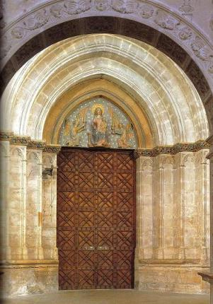
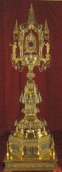
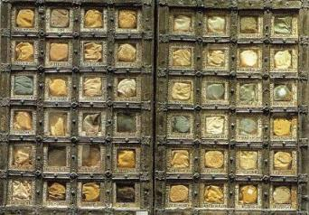
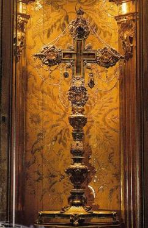
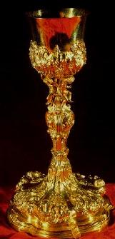

|
|
||||||
|
|
|||||||
|
La Seu, Sacristía de Vermells. |
|||||||
|
La Sacristía de Vermells, era la
pieza utilizada por los monaguillos que usaban hábito de color rojo,
circunstancia que determinó su apelativo. Destaca por su impresionante
altura y es de tres tramos, los laterales más pequeños, cubiertos por
bóveda de crucería. |
|||||||
|
 |
Esta sacristía alberga,
básicamente, una parte del tesoro medieval al lado de algunas piezas de
escultura y del fragmento del antiguo corredor de los cirios, un
artesonado mudéjar del siglo XIV eliminado con la reforma de principios
de este siglo, que está sobre la puerta de entrada a la sala gótica. Es
Tesoro se dispone en cuatro vitrinas adosadas a la pared, más otra, en
posición aislada, con la custodia mayor. |
||||||
| Destacan entre estos sendas portadas de las Actas Capitulares de los años 1376 – 1379 y de un Libro de Obra de la Catedral de la primera mitad del siglo XV. Ambas portadas están pintadas al temple sobre pergamino. La primera contiene, en una flor de ocho puntas de carácter heráldico, la imagen de la Virgen entronizada con el Niño. Sobre las olas del mar, todo en azules y rojos; esta representación correspondía al sello del la Catedral; la invocación al mar estará presente en el tímpano del ingreso a la sala capitular barroca. El segundo pergamino, un Libro de Obra de la Catedral, es de 1406. Con la misma técnica y domino de colores, la portada muestra La Virgen con el Niño en el regazo ligeramente ladeado. | |||||||
|
Hay que citar aún el sello de Pedro IV ya que, incomprensiblemente en una Catedral de fundación real, los sellos de este tipo conservados son muy escasos. El Libro de plata y la cruz relicario de San Sebastián son elementos notables del siguiente expositor; como los restantes que encierra, con la excepción del relicario de Las Santas Espinas o Espinas de Cristo, son de época medieval. La pieza de orfebrería más antigua del Tesoro de la Catedral parece ser el llamado Libro de plata, de hacia 1300, un relicario de dos hojas con finte y cuatro compartimentos cada una llenos de reliquias. Las láminas de plata, montadas en madera como es usual, están cinceladas con numerosas decoraciones geométricas y vegetales, con inserción de rostros humanos y animales fantásticos. Las turquesas engastadas le confieren suntuosidad. Equivocadamente, algunos autores han considerado que el Libro había sido el altar portátil, portado por el rey Jaime I durante su conquista de la isla. |
 | ||||||
|  | |||||||
|
La cruz de plata sobredorada dedicada a relicario de San Sebastián, en su origen debió de ser una custodia con el receptáculo central para la hostia Toda la cruz contiene esmaltes con motivos zoomórficos; las placas de los extremos representan en el anverso las figuras de la Virgen y San Juan, San Miguel y San Pedro; en el reverso, el tetramorfos es decir los atributos de los cuatro evangelistas. Se labró a mediados del siglo XIV y probablemente es importada, de origen sienes. |
|||||||
|
El relicario de las Espinas de Cristo, fechado entre 1546 y 1551, sigue, como es frecuente en la citada centuria, una tipología gótica con ornatos de grutescos, hornacinas aveneradas y otros motivos renacentistas, La obra fue encargada por el gremio de navegantes, de ahí las referencias a escenas marítimas, repujadas en el pie. Dejando la puerta de comunicación con la sala capitular gótica, otra vitrina contiene nueve objetos, cruces y relicarios sobre todo, aparte de un cáliz y una patena del siglo XVI. La pieza más espectacular es el relicario de la Túnica de Cristo, cuya autenticidad certificó al filo del siglo XV el documento, expuesto junto a aquel, firmado por el emperador bizantino de la dinastía de los Paleólogos, Manuel II y dirigido al papa de Aviñón Benedicto XIII, quizá llegó a la Catedral a través del antipara Clemente VIII, el obispo ya mencionado Gil Sánchez Muñoz. Pieza del siglo XV, fue concebida como un templete sustentado sobre un pilar de pie lobulado y esmalte central con la Virgen y el Niño. El receptáculo de la túnica, cuadrado y ornado con perlas, lleva en el marco una inscripción sobre su contenido. |
 | ||||||
|  | |||||||
|
Otros relicarios son el de San
Blas, también con pie lobulado, y el de San Veracundo, los dos de gran
sencillez y con la cavidad destinada a las reliquias acristalada. Por
último, destaquemos el relicario de la Túnica de la Virgen, en el
extremo opuesto al de la Túnica de Cristo, que es casi idéntico a éste,
pese a que el joyero que lo labró hacia 1504 introdujo algunos cambios.
Aparte de ligeras variaciones de forma, enriqueció el templete con
esculturas del Padre Eterno, entre ángeles músicos y estatuas de la
Virgen y del ángel Gabriel, situadas a ambos lados del objeto. |
|||||||
|
Conjunto exótico con los rimmonim,
una pareja de origen hebreo y de plata repujada y cincelada, servían
para desplegar y sujetar los pergaminos de la Biblia en lectura
sinagogal. Las varas fueron añadidas posteriormente, en corte gótico. Se
incorporaron al Tesoro de la Catedral en 1493 por obsequio, previa
compra de los rimmonim en Sicilia de donde procedían. Así lo indica la
inscripción hebrea que, además de versos religiosos, informa del tema.
“En la sinagoga de los judíos de Cammarate el Señor la guarde. Amén” |
|||||||